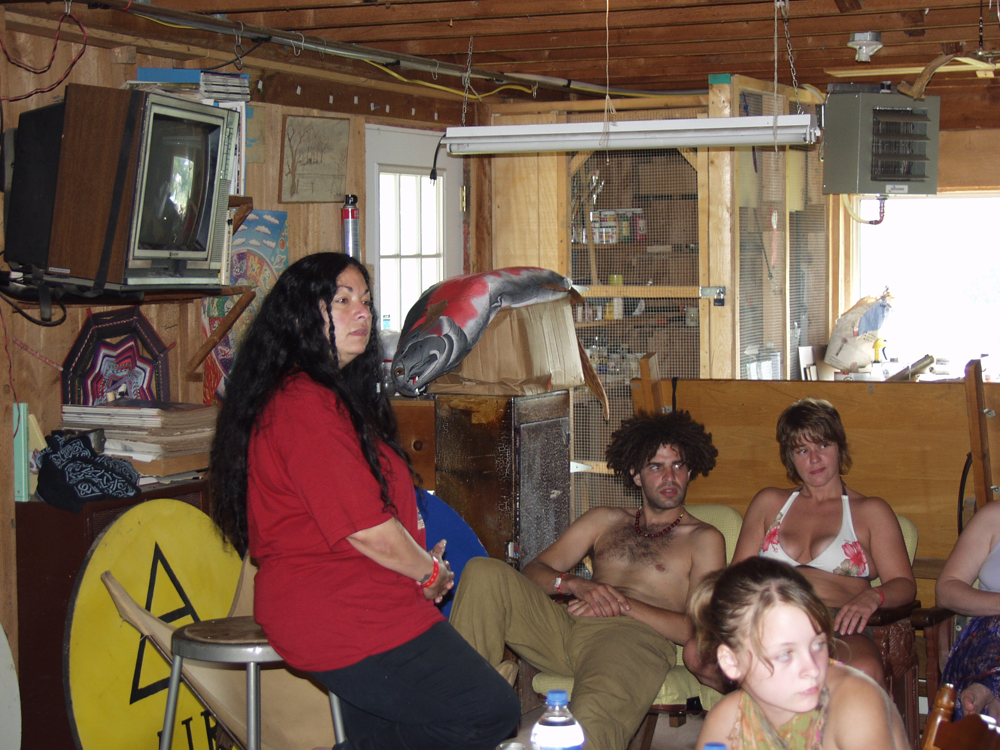
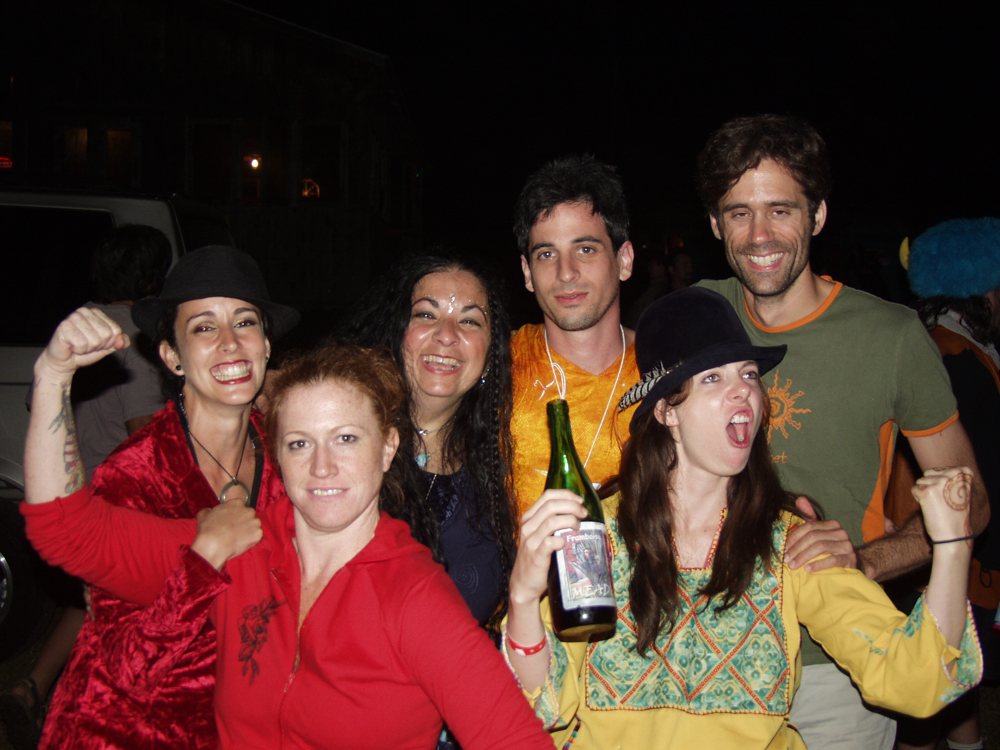
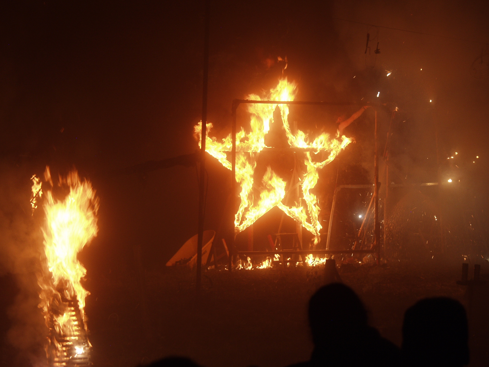
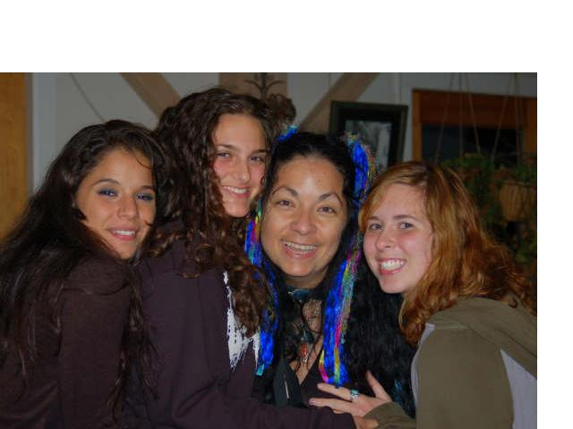
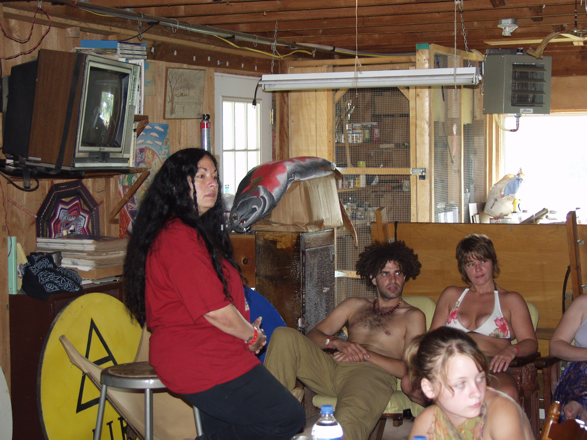
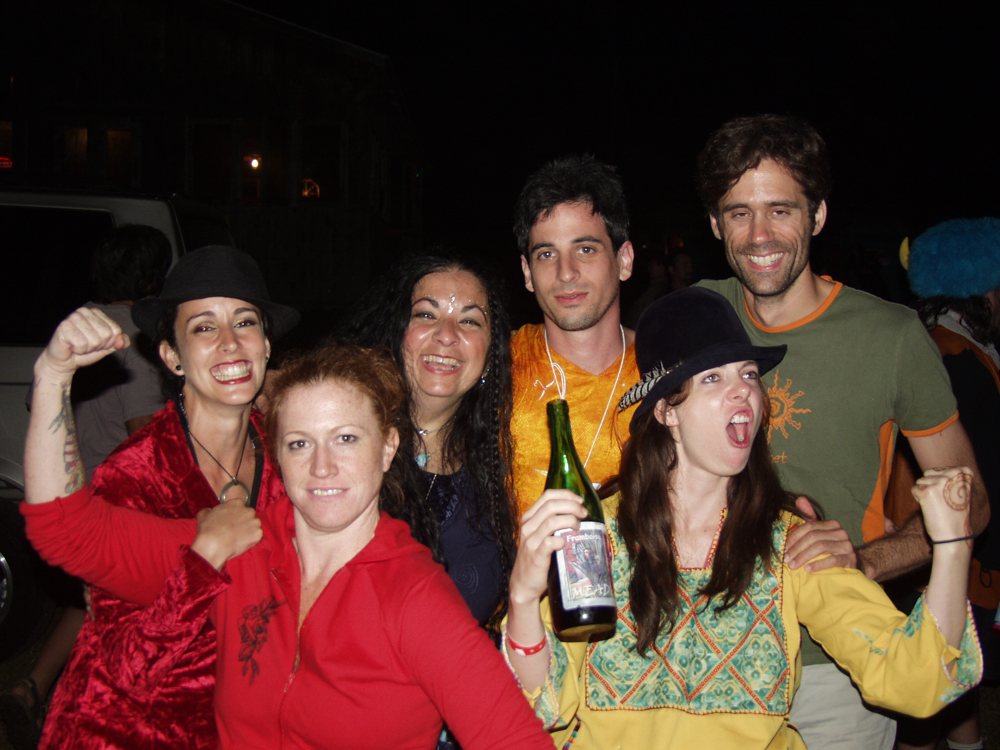
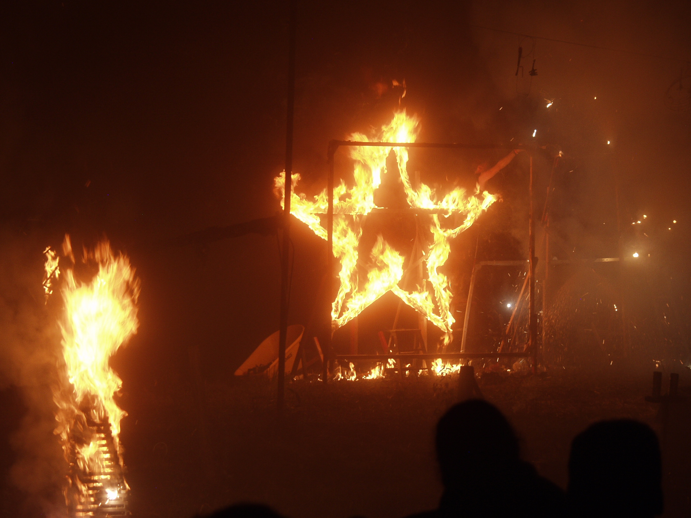
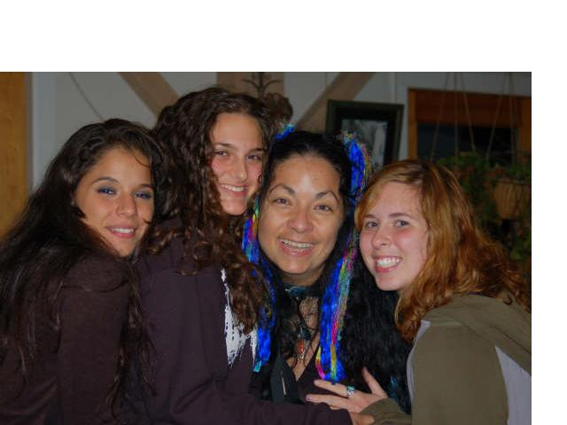

HOME
HOME
About us!!
We know have a shopping cart! Click here to shop at Brid's Closet! MasterCard/Visa/Paypal accepted!
Open Mon-Sat. 11am-7pm
We are commited to providing the best products and to serve all of your metaphysical needs. At Brid's Closet, all forms of spirituality are honored!
Spiritual counceling, tarot readings and various classes (Wicca, Tarot, Reiki, Herbalism, Crafting, Spellwork and childrens programs) are available. I am also an interfaith minister, so now we can perform marriage, naming, wiccaning, funeral and commitment ceremonies. Please call or write us for details. Individual instruction is also offered.
Bernadette has over 20 years in teaching and practicing Wicca, the Tarot and native american practices. She is a 3rd degree priestess in the Alexandrian tradition, an ordained Interfaith minister, a tribal member and pipe carrier of the Sun Bear tribe (an all nations tribe) , and a tribal member of the Baramaya tribe (Taino bloodline). Currently a 3rd degree Reiki practitioner and has given classes in the Tarot in shops all over Orange County NY.

 !
! 


 !
!
Call us for any info on the dates for upcoming FULL MOON or HOLIDAY celebrations!
Contact us at: Bernadette@bridscloset.com or call us at: (845) 458-8726 for directions and any info you may need.


TopSite List pagan www.bridscloset.com

Want TribeCast on your site?Get your own!